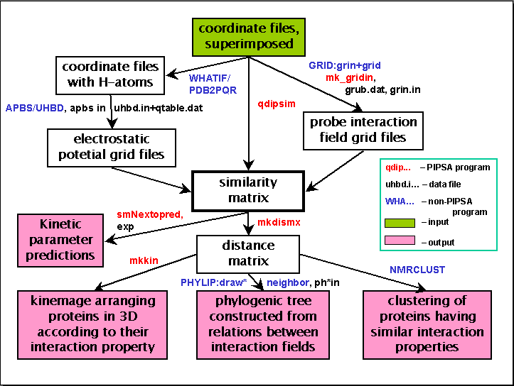

PIPSA
(Protein Interaction Property Similarity Analysis) 3.0
Overview
Here is a flowchart of the core of the similarity analysis process with
the names of relevant PIPSA and non-PIPSA programs and data
files. No PIPSA scripts appear here - they are written to run a
specific part of analysis (for example, right-top arrow corresponds to
running of 2 scripts: do_pipsa_GRID_prep and do_pipsa_GRID_grids).
